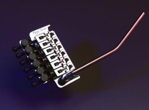
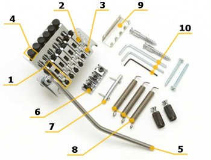

FLOYD ROSE TREMOLO SYSTEMS
The History Of One Of The World's Most Famous Trem Bridge Systems

The Floyd Rose tremolo system is a system that allows you to raise your pitch
with the whammy bar. On the classic tremolo systems, tone lowering was the only possibility. Floyd Rose
is the name of the organization that licenses and disitributes the Floyd Rose Locking Tremolo. A full
Floyd Rose system consists of a floating bridge with locks to prevent the strings from detuning and a
lock at the nut of the fret board to hold the strings and again to prevent from detuning. Because of
the locks, the tuning pegs don’t work anymore, so they have made heads for fine tuning. The Floyd Rose
Tremolo was the first tremolo to be able to lower and raise the pitch.


Parts
- Saddle: A metal box the string is locked into. There is one saddle for each string, hence six for the standard 6-string guitars, and seven for 7-string guitars. Each saddle contains a long screw that fixes the string holder block inside it. An Allen wrench is required to loosen or tighten these.
- String Holder Block or Saddle Block : A cube-shaped metal block that presses the string end into the saddle wall to
lock it tight.
- Intonation Screws: Screws that kep the saddles in place. Driving these screws in or out of the saddle leads to a
intonation difference. Again an Allen wrench is needed.
- Fine Tuners: Screws that are used to fine-tune strings instead of the machine heads which cannot be used after the
nut has locked the strings at the neck. It can be rotated with bare hands.
- Tremolo Arm: The most visible part of mechanism, a handle that can be used to change played notes pitch up and down
during play. This is also called the tremolo or whammy bar.
- Nut: A string clamp, on the place of the “zero fret”. It has screws and braces called locks, to lock the strings
tight.
- String Retainer: A metal bar installed at headstock to retain strings that go to the machine heads.
- Springs: Springs are in the back of the guitar to pull the bridge into a floating position. There are usually 3
springs, but this can be adjusted to the players wish. Some guitars have just one spring and others have 5.
- Spring Claw Hook: A connector between the guitar body and springs. It has special "claws" to attach the springs to.
This part is usually mounted to the guitar body using loose long screws that can also be used to change the tension
of springs and thus re-balance the whole tremolo system.
- Allen wrenches: Three sizes are usually supplied with the tremolo. The smallest is used for intonation screws; the
mid-sized wrench is used for fixing screws on saddle blocks and the largest is for nut screws. This is also a nice
example of the cost efficiency with Floyd Rose licensed tremolo, they only supply the customer with two wrenches
and they make the screws on the saddle blocks and the nut the same.
Popular Users


The tremolo system was being popularizes by Richie Sambora, Dave Murray, Adrian Smith (from Iron Maiden ),Vinnie
Vincent and Eddie van Halen. Most modern guitar players use the Floyd Rose system in the more heavy metal. Also a
lot of guitarists use the whammy bar as a tool to make new sounds. For instance Joe Satriani, or Satch, uses his
tremolo, which is an EdgeIII or EdgePro, to raise the pitch of a pinch harmonics to get his “Satch Scream”. Dimebag
Darrel made use of his bar to make “Dime Squeals” and Tom Morello uses his whammy in combination with several other
effects to make Hip Hop like sounds. Herman Li, who is the guitarist of dragonforce uses an Edge-Zero, a derived
from the original Floyd Rose, just like Satch.
Official Web Site